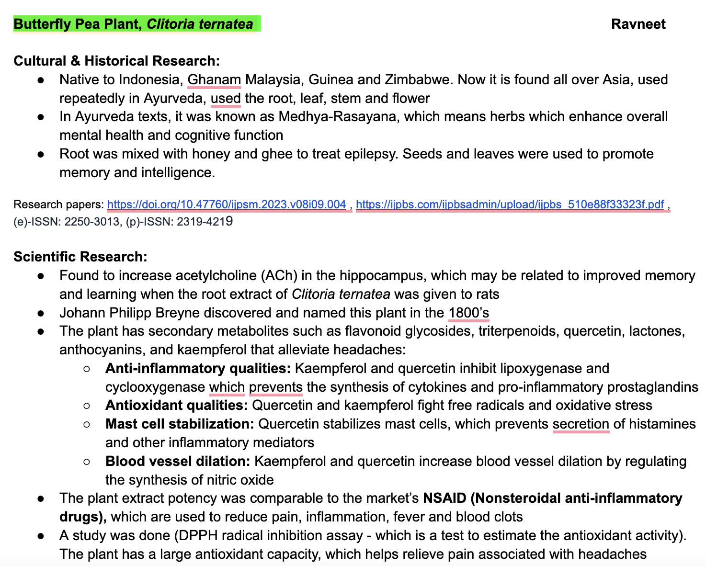
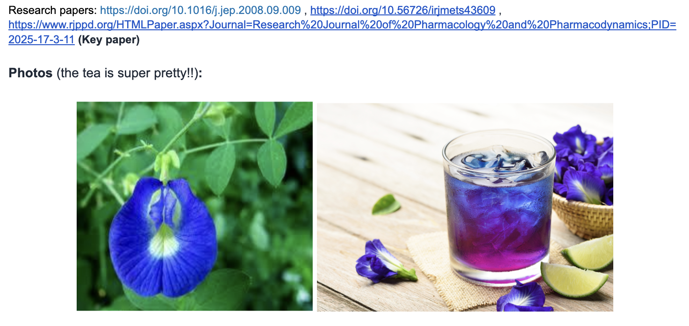
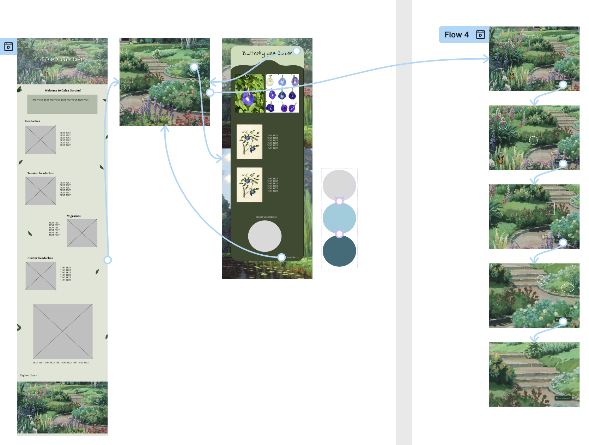
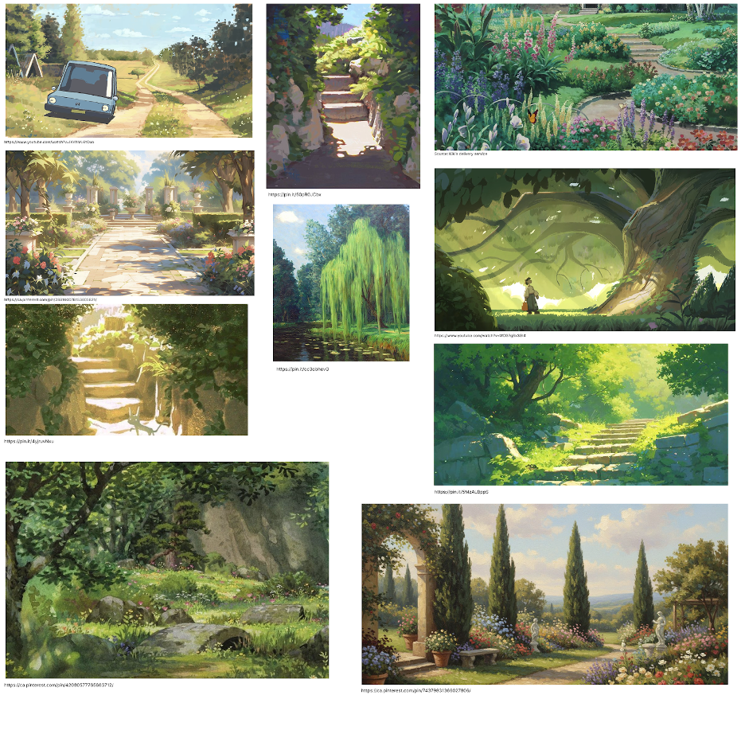
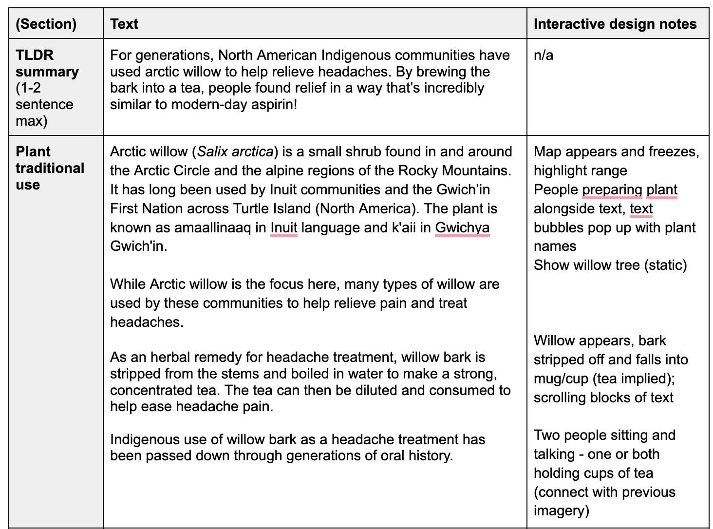
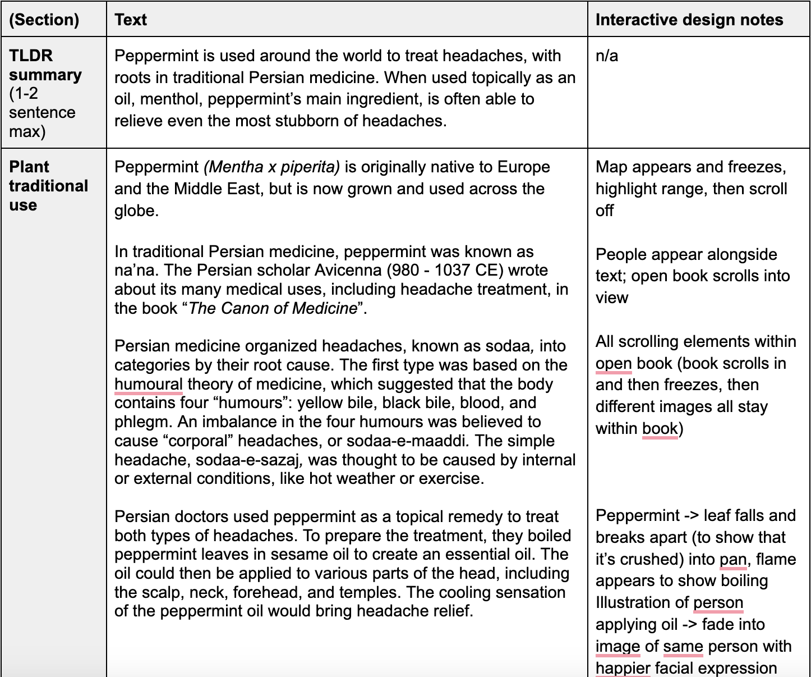
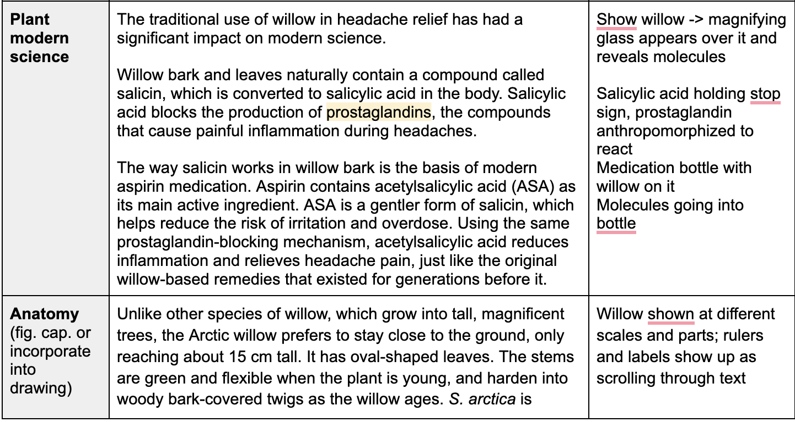
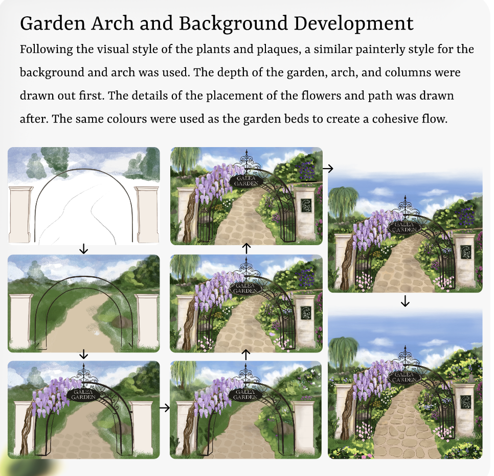

Diary Entry 1
5/February/2026
What I Explored
Research
For the Galea Garden project, our group decided to research different plants that are used as remedies for headaches. I started out by researching using Elicit and got read through some papers there. I found interesting papers on the Butterfly Pea Flower which had lots of cultural significance and relation to headache treatment. There are some papers that have started to look into researching the components of this flower and plant for the treatment of headaches. It would really interesting to delve deeper into the cultural and scientific side for this plant (and for other plants). I have a greater appreciation for the remedies nature has provided us with and I think delving deeper into this opens doors for a lot more exploration into other plants associated with traditional medicine for different types of remedies.
Project Research
Click on each to see the full details!


Diary Entry 2
12/February/2026
What I Explored
2D Animation, Prototyping, Background Development
• I explored frame by frame 2D animation, using Procreate Dreams. More details on this can be explored here.
• I tried creating prototypes using Figma to get a feel of the scrollytelling interface.
• I took lots of inspiration from animators and pinterest for the background design.
Project Research
Click on each to see the full details!



Reflection
2D Animation
I had a lot of fun learning more about 2D animation and exploring how to create frame by frame animations. I think as I continue to work on it more, I will get better and better at it.
Prototyping
I initially thought Figma had a feature for scrollytelling however it doesnt. I even watched a few tutorials on Youtube trying to stimulate a scroll approach, where items could pop up when you hover on the screen however this is hard to perfect with the layout. In the end, I just decided to have placeholder images to show where they would be placed once a user scrolls to that place. I also created a prototype of the garden flow and how the user would be able to click on a plant and how the overlay information would appear. This part was easy to communicate. After communicating with Shay, I will try to simulate the scrollytelling through Adobe After Effects.
Background Development
For the background development, I took a lot of inspiration from different artists on pinterest and instagram. I really wanted to create a background that has a lot of soft greenery and warmth to it. As I was testing about Procreate Dreams, I found many artists tutorials where they work with a lot of nature landscapes. Through their work, I also gained a lot of inspiration and going forward, I will start creating a background for the website using different elements from the inspiration.
Diary Entry 3
26/February/2026
What I Explored
Prototype 2
• I used Adobe Illustrator and Adobe After Effects to create a prototype to stimulate the storytelling scroll.
Prototype
Watch the video to see the prototype created in AfterEffects!
Reflection
2D Animation
After trying out the Figma prototype, I realized another tool needed to be used to see the scrollytelling simulation. To do this, I utitilized Adobe After Effects. First, I went on Adobe Illustrator and added all the visual references for where we wanted our placements to be in one long page. For the elements which were going to be animated in after effects were placed on seperate layers. After placing the elements where I wanted to be shown, I took this illustrator file over the after effects. I then added key frames to the position and opacity depending on the element. It was challenging to position the page and have it flow through with the elements which were animated as I had to carefully manually change the sections. This might have been due to the way I set it up in Adobe Illustrator and my limitation of knowledge with After Effects. Overall, even though the simulation is just seen with reference images, and we don't completely see how the garden entry will be, we were able to get a good idea of the flow of informationa and placement of text.
Diary Entry 4
5/March/2026
What I Explored
Interactive Design
I met with Ella and Grace to discuss the detailed interactive elements of the storytelling website.
Interactive Design Notes
Click on each to see the full details!



Reflection
This week, Ella, Grade and I met online to discuss the interactive design elements for each page of the overlay. This did not include just user actions needed but also included the animations which would appear as a user scrolls. This was also done so we could discuss the flow of the pictures being shown with the information and also figure out the amount of assets needed for each overlay. Each overlay ended up having quite a bit of animated layers, so we had to make sure we break down the information in a way where the users attention for the animated elements wasn't being competed for the text information. This meeting was very informative for us and helped us catch any missing gaps or errors in the flow of the script.
Diary Entry 5
12/March/2026
What I Explored
Background Design Development
I worked on the main entry to the Galea Garden visual design.
Background Garden Design Development


Reflection
I worked mostly on the background design for this week. This was to be the main visual seen as the user scrolls past the headache introduction information and enters into the garden. As a team we had decided, we wanted the entry to have a metal arch and a sign somewhere where it shows this is now the galea garden. To make this a very inviting space, I utilized warm colours and colours from the colour palette created by Winter. With the wisteria growing on top of the entry gate, it's adds an even more organic feel to the space. I had a lot of fun playing around with texture, depth and the variety of flowers to add into this drawing. On one of the columns, I also added the galea garden helmet that was shown previously to tie together the information seen before. Overall, I didn't have many challanges while working on this piece. It was relaxing to create something like this in this program and I'm happy I had the opportunity to do so!